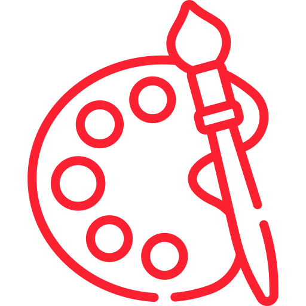

DISEÑO INTERFACES WEB
Marçal Alarcón Brugal

Tema 1
Planificación de interfaces web

Tema 2
Uso de estilos

Tema 3
Implementación de contenido multimedia

Tema 5
Diseño de webs accesibles

Tema 6
Desarrollo de interfaces web amigables

Este obra está bajo una licencia de Creative Commons Reconocimiento 4.0 Internacional.
Web realizada por Marçal Alarcón Brugal